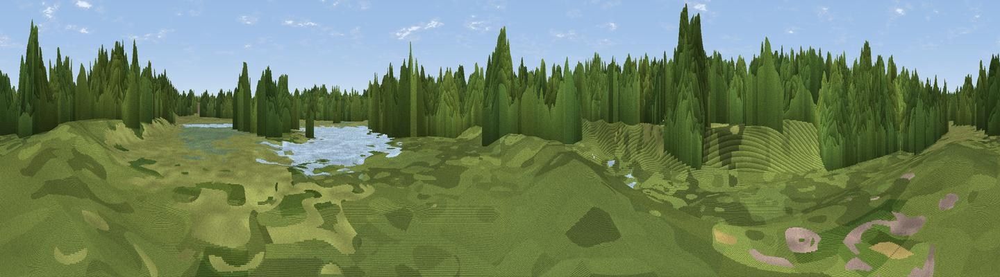

Viewpoint near Northwich
#46237 in England · top 100% of its area beats it · near Northwich · access?Where it is
The exact computed spot (SJ 66363 74750). Click the marker for map links.
Public access: no public right of way or access land is recorded at this exact spot — it may be on private land. Computed from Natural England's CRoW access layer and OpenStreetMap rights of way — not the legal definitive map. Always verify locally.
The view, rendered

A 360° render of this exact spot computed from the terrain model, tree cover and land cover — summer colours, afternoon light, calibrated against photographs of famous viewpoints. Real trees, hedges and buildings will differ in detail.
The panorama
Grey silhouette: terrain skyline in each direction (720 bearings, Earth curvature and refraction included). Dashed green: skyline with trees (+15 m) and buildings (+8 m) as obstacles. Blue strip: how far the ground is visible on each bearing.
Where the view opens
Wedge length = distance to the farthest visible ground on that bearing (vegetation-aware). Rings at 10, 25 and 50 km.
What fills the view
74% woodland · 17% grassland · 4% water · 3% built-up · 1% wetland ·
Angular shares of the visible panorama (visual magnitude), not map area. Landscape diversity 0.37 (0–1 Shannon).
Key numbers
More beautiful places nearby
The staircase of upgrades: each row has a higher view potential than everything closer. Driving times are estimates from straight-line distance, calibrated against real road routing — check an actual route before setting out.
| Place | Direction | Drive | Score |
|---|---|---|---|
| Viewpoint near Davenham | SSW · 3 km | ~7 min | 10.0 |
| Gallowsclough Hill | WSW · 10 km | ~19 min | 15.4 |
| Viewpoint near Mere | NE · 10 km | ~20 min | 30.6 |
| Aston Grange | WNW · 10 km | ~20 min | 47.2 |
| Viewpoint near Stretton | NNW · 11 km | ~21 min | 70.3 |
| Eddisbury Hill | WSW · 12 km | ~23 min | 71.1 |
| Hangingstone Hill - Pale Heights | WSW · 13 km | ~24 min | 73.3 |
| Beacon Hill | W · 14 km | ~26 min | 74.3 |
53.26866, -2.50580 · source: osm viewpoint · position refined by local search. Computed location — check access rights before visiting.